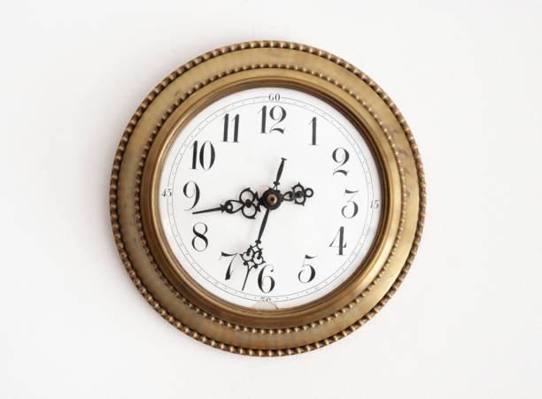
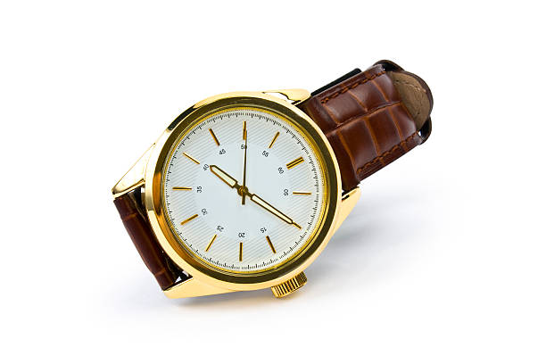
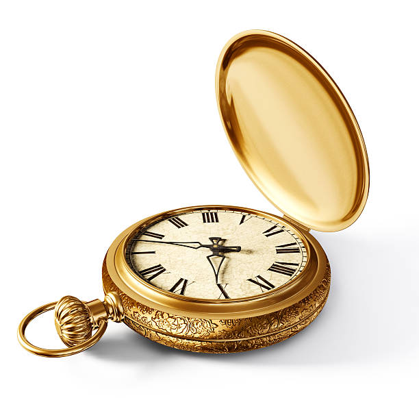
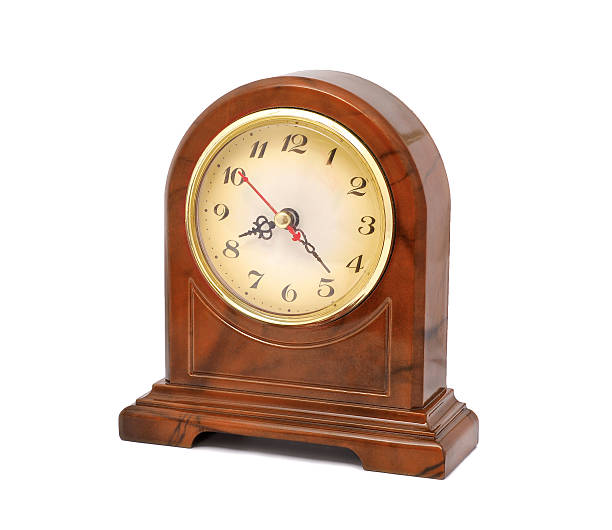

Wall Clock
An delightful addition to any home or office, our classic wall
clock combines elegant design with precision timekeeping. With its
clean lines and simple styling, this clock is the perfect blend of
form and function. Crafted from high-quality materials and built
to last, it's sure to become a cherished piece in your collection.

Classic Watch
Elevate your style with our classic hand watch. Designed with
timeless elegance in mind, this watch features a sleek and
sophisticated look that's perfect for any occasion. Whether you're
dressing up for a formal event or heading out for a casual day,
our classic hand watch is the perfect accessory to complete your
look.

Pocket Clock
Keep time in style with our pocket classic clock. This charming
timepiece features a compact design that's perfect for carrying
with you wherever you go. Crafted from high-quality materials and
built to last, it's sure to become a treasured keepsake that
you'll cherish for years to come.

Vintage Clock
Add a touch of old-world charm to your home with our vintage
antique clock. This beautifully crafted timepiece features
intricate details and a classic design that's sure to impress.
With its elegant styling and precise timekeeping, our vintage
antique clock is the perfect statement piece for any room. Whether
you're a collector or just looking for a unique piece to adorn
your home, this clock is sure to delight.